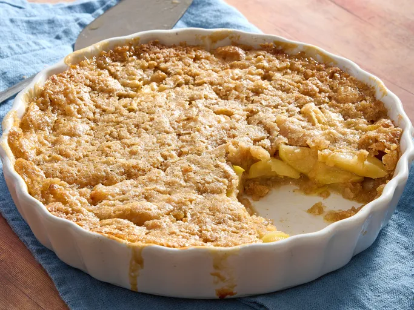

Easy Swedish Apple Pie

Description
This Swedish apple pie bakes cinnamon apples topped with a golden cake-like crust. No rolling out dough required! Pairs wonderfully with vanilla ice cream and a drizzle of caramel.
Ingredients
- 1 ½ pounds Granny Smith apples - peeled, cored and sliced
- 1 tablespoon sugar
- 1 cup sugar
- 1 cup flour
- ¾ cup melted butter
- 1 large egg
- 1 teaspoon cinnamon
Steps
- Gather all ingredients. Preheat the oven to 350 degrees F (175 degrees C).
- Toss apples with 1 tablespoon sugar and pour them into a deep 9-inch pie plate.
- Thoroughly mix together 1 cup sugar with flour, butter, egg, and cinnamon. Spread this evenly over the top of the pie.
- Bake in the preheated oven until apples have cooked and topping is golden brown, 40 to 45 minutes.
Home